- Offering exclusive, private canyoning tours tailored to your group
- Experienced and certified guides ensuring safety and fun
- Small groups with personal caring
- Tours available at times that suit your schedule
- Respecting nature and promoting sustainable tourism
- Special Events for birthdays, team-building, and bachelor parties

- Custom-designed tours for your group only
- Skilled and certified guides focused on your safety and enjoyment
- Small group sizes for a truly tailored experience
- Plan your adventure at a time that works best for you
- Committed to protecting nature through sustainable practices
- Unique tours for birthdays, team-building, and bachelor parties

- Offering trips for hiking, canyoning, outdoor yoga, snowshoeing, etc. for every season
- Activities customized for individuals, families, or groups of all skill levels
- Explore breathtaking landscapes, serene trails, and hidden gems
- Experienced and certified guides ensuring safe and enjoyable experiences
- From summer canyoning to winter snowshoeing - there is not off-season
- Committed to sustainable tourism and preserving the environment
- Create lasting memories through fun and adventurous outdoor activities

- Uniting certified canyoning instructors and guides across Romania
- Providing professional training programs and recognized certifications
- Promoting safety standards, education, and responsible canyoning practices
- Developing and publishing technical guides and manuals for skill advancement
- Supporting canyon exploration, equipment standards, and long-term canyon maintenance